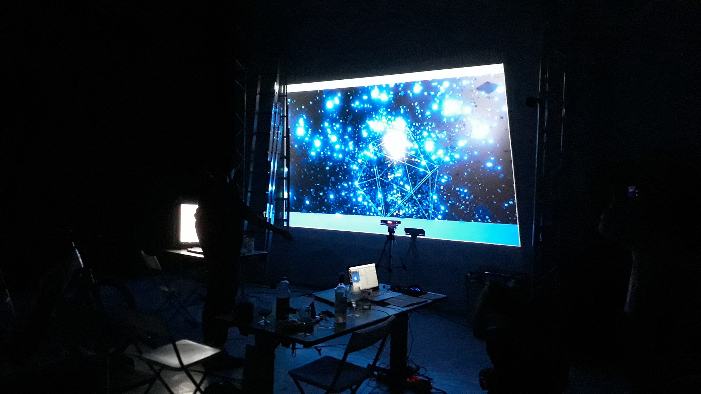
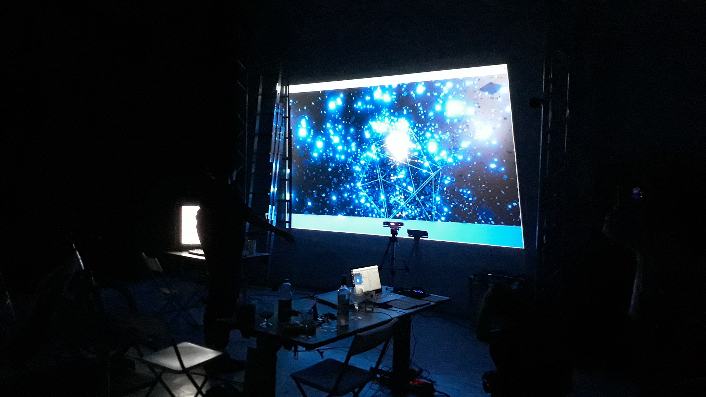
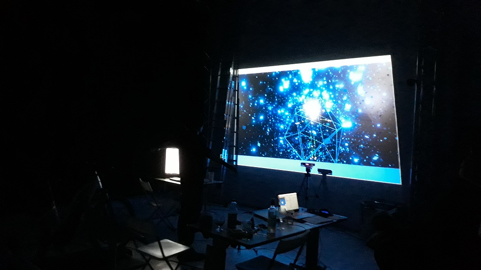
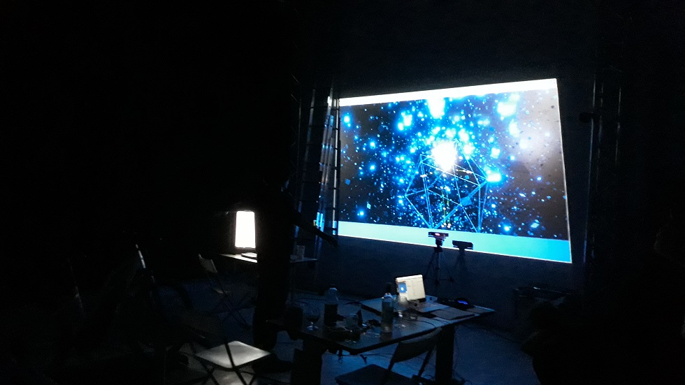

Kinexperience
Abstract
Modern choreographic composition is strongly influenced by dance theorist Rudolf Laban. He explored the field of Choreutics with the concept of Kinesphere, an icosahedron representing the natural boundaries of our bodily space in which motion happens.
Kinexperience immerses the public right into Laban’s dance framework by wrapping a full human-sized virtual icosahedron around the person’s body. The icosahedron reacts to the motion of hands and feet triggering visual effects like trace lighting or particles explosion, giving the dancer feedback and insight into its own spontaneous practice.
Showcase
 



 

Installation
VR experience - Will be exhibited at Mirage Festival 2018, Lyon, FR.
Dome performance - Vaux-En-Velin’s Planetarium show is under planning.
About
Ariane Cassimiro
Ariane Cassimiro explores relations between dance and digital arts by positioning the public at the very heart of her creations.
With a broad experience in live performance, she started a new projects line in 2016 with «Là», in which images are generated out of the person’s body motion. In an effort to widen the public aesthetical experience, she focuses on virtual and augmented reality to create performance mixing digital arts and dance.
http://arianecassimiro.wixsite.com/inicio
Alex Andrix
Alex Andrix uses science in all his creations. Passionate about fundamental physics and particle systems, he started in 2014 with a project of voice-driven artwork generation using web languages. Meeting art director Jean-François Robin in 2017, he co-developed VR project _Transition presented at Mirage Festival in Lyon the following year.
Focusing on bringing aesthetics to science and scientific perspective to digital arts, he currently works with Laboratoire de Physique ENS de Lyon on showcasing plasma equations in virtual reality.
http://alexandrix.com/